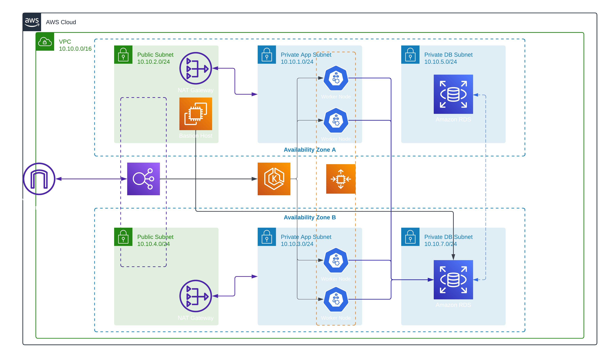

A first dive into Kubernetes — taking an existing bookshop application, containerizing it, deploying it on EKS with Helm, and wiring up two CI/CD pipelines to automate everything from infrastructure provisioning to rolling deployments.
01 — Context
The WordPress project got the foundations right — modular Terraform, remote state, Secrets Manager, a working site. But it was a single-instance application with no containers, no orchestration, and no real deployment pipeline. The obvious next step was Kubernetes, and the obvious place to start was EKS.
The application itself wasn't mine — an existing bookshop with a Java Spring Boot backend and a React frontend. The goal wasn't to write software; it was to learn how to containerize, deploy, and operate someone else's application on a real Kubernetes cluster. Dockerfiles, Helm charts, CI/CD pipelines, EKS node groups — all of it from scratch, with essentially zero Kubernetes experience going in.
Scope
Two GitHub repositories, two CI/CD pipelines, one EKS cluster. The infrastructure repo handles everything from VPC to EKS to RDS. The code repo handles building Docker images and triggering rolling deployments. They're connected by a single shared artifact — the RDS endpoint — passed between pipelines via S3.
02 — What improved from project one
03 — Architecture

| Component | What it does | Notes |
|---|---|---|
| networking module | VPC, public/app/DB subnets across 2 AZs, IGW, one NAT GW per AZ | Fixed SPOF from project one — each AZ has its own NAT GW and route table |
| application module | EKS cluster + managed node group (t3.medium, 2–6 nodes, 4 desired) | Cluster and nodes in private app subnets. IAM roles for cluster and node group provisioned separately. |
| database module | RDS PostgreSQL 16.3 in private DB subnets, Multi-AZ, credentials via Secrets Manager | Security group allows ingress from EKS cluster SG and Bastion SG only. EKS SG fetched dynamically. |
| bastion module | t2.micro EC2 in public subnet, SSH key injected via GitHub secret | Exists only to seed the DB. Used by CI pipeline on every fresh apply, then left idle. |
| Helm — backend chart | Spring Boot deployment (4 replicas), LoadBalancer service, DB secret | DB endpoint, username, password, name all injected at deploy time via --set flags |
| Helm — frontend chart | React deployment (4 replicas), LoadBalancer service | Backend URL injected at deploy time. Two LoadBalancers — one per service. |
04 — The pipelines
The S3 handoff
The RDS endpoint needed to travel from the Terraform Apply workflow to the Deploy to EKS workflow. The solution: write the endpoint to a file, upload it to the same S3 bucket used for Terraform remote state, download it in the next workflow. Simple, effective, and requires no additional infrastructure.
05 — The interesting problems
The RDS instance lives in a private subnet with no public access. But the GitHub Actions runner is on the public internet. The solution was the Bastion host. The CI pipeline SSHes into it from the runner, copies the SQL dump over SCP, installs the PostgreSQL client, and runs psql from inside the VPC where it can reach RDS. The SSH private key is stored as a GitHub secret, base64-encoded, decoded to a temp file during the workflow, and deleted immediately after.
This one took longer to solve than it should have, and the root cause was a gap in understanding how React applications actually work. The assumption was that the frontend could reach the backend via a Kubernetes service name. It can't. React builds run in the user's browser, which has no idea what backend-service.devops-project.svc.cluster.local means.
The fix was to expose the backend as a LoadBalancer service, wait for AWS to provision the load balancer and assign it an external hostname, then inject that hostname into the frontend deployment as REACT_APP_API_BASE_URL. Two LoadBalancers — one for frontend, one for backend. It works, but it's not the right answer.
What I'd do now
A single ingress controller with path-based routing: /api/* to the backend service, /* to the frontend. One LoadBalancer, one external hostname, no dynamic URL injection needed. The frontend talks to /api which the ingress routes internally — the browser never needs to know the backend exists as a separate service.
06 — What still wasn't right
| Gap | What it means | What I'd do now |
|---|---|---|
| latest image tag | Both services always push and pull :latest. No versioning, no rollback path — if a bad image gets pushed, there's no previous tag to roll back to. | Semantic versioning or commit SHA tags. The observability project that followed introduced this properly. |
| Two LoadBalancers | One per service. Costs more, exposes more surface, and was only necessary because the frontend/backend networking wasn't understood yet. | Single ingress controller with path-based routing as described above. |
| No HTTPS | Both LoadBalancers serve plain HTTP. Still the same gap as project one. | ACM certificate, HTTPS listener, HTTP redirect. Easier with a single ingress — one cert, one termination point. |
| No observability | No metrics, no logging aggregation, no dashboards. If something breaks in the cluster, the only tool is kubectl logs. | This was the direct motivation for the next project — a local deployment specifically to practice Prometheus, Grafana, and ArgoCD. |
07 — Reflection
Six weeks of learning Kubernetes by doing it. Not reading about it, not following a tutorial step-by-step — building something real on EKS with zero prior experience and a budget that demanded destroying and rebuilding it repeatedly. Most of the hard problems came from not knowing what I didn't know: the frontend/backend networking issue, the redundant rollout restart, the hardcoded API URL in the Dockerfile. These aren't obscure edge cases — they're things that become obvious once you understand how the pieces fit together.
The things that did work are worth naming. The Bastion seeding pattern is a legitimate solution to a real constraint. The decoupled pipeline design is correct — infra and application deployments should be separate concerns. The Helm charts are parameterized properly, secrets are handled cleanly, and the rolling update configuration is sound.
What came next
The absence of observability in this project was obvious and frustrating. The next project was a deliberate response to that — deploying the same bookshop application locally with a full monitoring stack: Prometheus, Grafana, PostgreSQL Exporter, ArgoCD for GitOps, and proper semantic versioning in the CI pipeline.